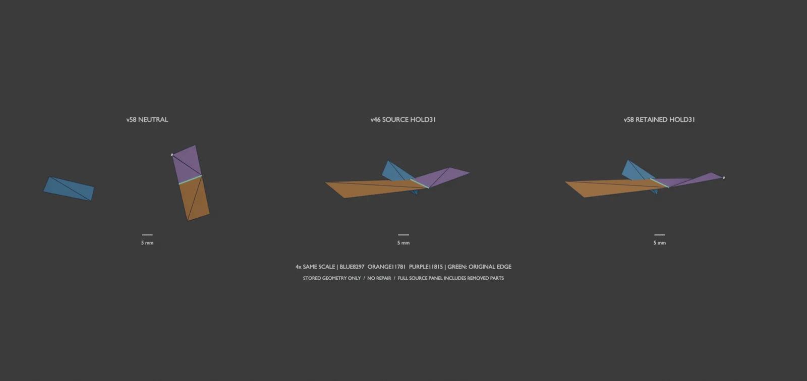
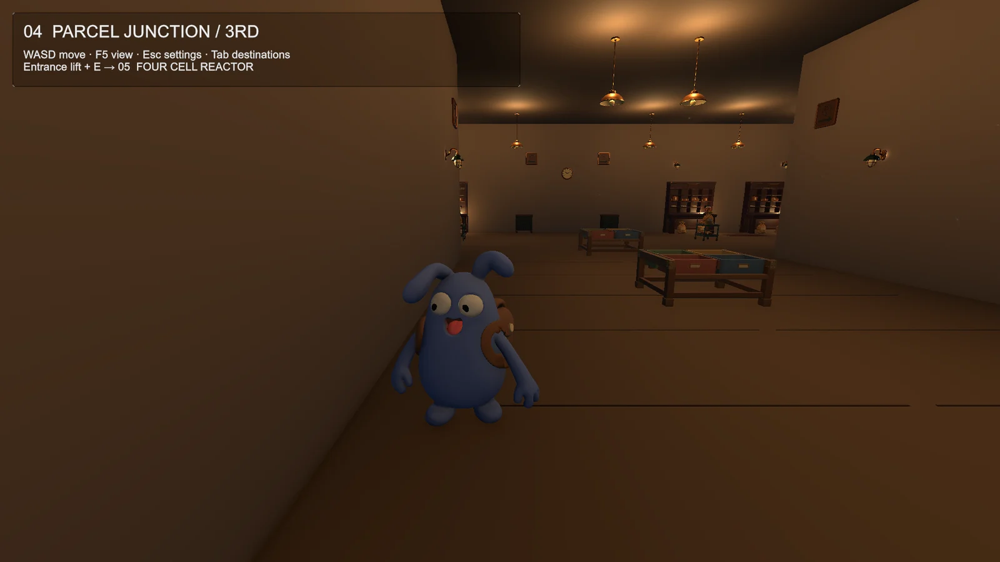

모션 검토 후보
빠르게 한 번에 앉기
앉는 전환 약 0.27초 · 빠른 템포 후보
팔 준비 동작 없이 한 번에 앉는 동작을 기존보다 1.5배 빠르게 조정했습니다. 원본 기준 2.25배 템포이며, 본편 의자 상호작용 연결은 남아 있습니다.
CURRENT COLLECTION
최신 V 버전과 유지 중인 동작 검토본
부분 진단 · 수정 전 · 게임 미적용
새 49개 조건에서 추가 관통은 없었습니다. 저장된 관통 근거를 재사용해 팔 연결면의 접촉 관계를 확인했습니다.
검토 범위의 기존 관통 열 쌍과 큰 접힘은 남아 있습니다. 같은 원면의 나머지 조각 검토와 모델 수정은 아직입니다.
제작·검토 2026-11-16 20:07 KST · 웹 갱신 2026-11-16 20:07 KST

이미지는 v84의 유지 중인 자료입니다. v106에는 새 이미지가 없습니다.
가방과 치장은 독립 착용물로 준비합니다. 현재 게임의 기본 파란 토끼는 유지하고 있습니다.


기본 동작을 먼저 다듬습니다. 착석·손짓은 원본 기준 2.25배 템포 후보이며, 보행 주기는 별도로 맞춥니다. 둥근 몸통과 손·팔 길이를 유지합니다.
앉는 전환 약 0.27초 · 빠른 템포 후보
팔 준비 동작 없이 한 번에 앉는 동작을 기존보다 1.5배 빠르게 조정했습니다. 원본 기준 2.25배 템포이며, 본편 의자 상호작용 연결은 남아 있습니다.
미리보기 1.5배 재생
현재 유지 중인 보행 비교 기준입니다. 발목 주름과 실제 게임 이동 속도 맞춤은 남아 있으며, 새 기본 플레이어로 교체하지 않았습니다.
미리보기 2.25배 재생
손 모양과 팔 길이를 유지한 손짓 후보입니다. 손가락 세부 동작·다른 체형·게임 적용·사용자 검토는 남아 있습니다.
춤은 후순위로 보류했습니다. 걷기·뛰기·점프·착석·들기의 기본 동작과 네 체형 적용을 먼저 다듬습니다. 아래 자료는 사용자 최종 승인 전이며, 이전 착석과 폐기된 실험 영상은 표시하지 않습니다.
검증용 키보드 입력으로 걷기·달리기·정지·회전·점프와 착지를 확인했습니다. 292개 연속 프레임 동안 포커스를 유지했습니다. 실제 키보드 체감, 1인칭, 착석·들기 연결과 관절 모양 검토는 남아 있습니다.
검사 11-15 17:35 KST · 사용자 체감 승인 전

어깨 비교 후보는 기존보다 나아지지 않아 채택하지 않았습니다. 원래 모델을 유지하며 몸통과 연결부를 계속 다듬습니다.
물건을 든 채 1인칭으로 바꾸면 함께 사라지던 오류를 수정했습니다. 기존 모델의 Play 검사에서 시점 전환·놓기·재집기 14개 경우를 확인했습니다. 손 접촉, 들기 위치와 실제 운반 체감은 검토 중입니다.
검사 11-15 19:17 KST · 별도 테스트 물체 · 사용자 체감 승인 전
손을 뻗어 집기 0.32초, 내려놓고 손 떼기 0.32초. 둥근 몸과 손·팔 길이를 유지한 작은 상자용 동작 후보입니다.
현재 속도를 영상에 반영했습니다. 재생 시 추가 가속은 없습니다.
받침 높이에 놓인 작은 시험 상자를 4.5cm 들어 올립니다. Unity의 별도 검토 모델에서 재생을 확인했습니다. 현재 게임 시점에 맞춘 별도 검토 상자는 정면에서 화면 아래로 빠지고, 내려다보면 보입니다. 손 표시·접촉, 본편 들기·보행 운반·다른 체형과 어깨 연결부는 미완료입니다.
Blender 제작 11-15 19:59 · Unity 재생 11-15 20:25 · 시야 검사 11-15 20:54 KST
파랑 체형 · 별도 검토 상자 · 사용자 승인 전